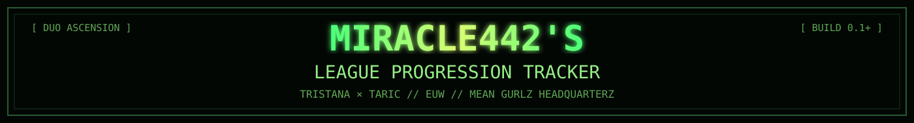
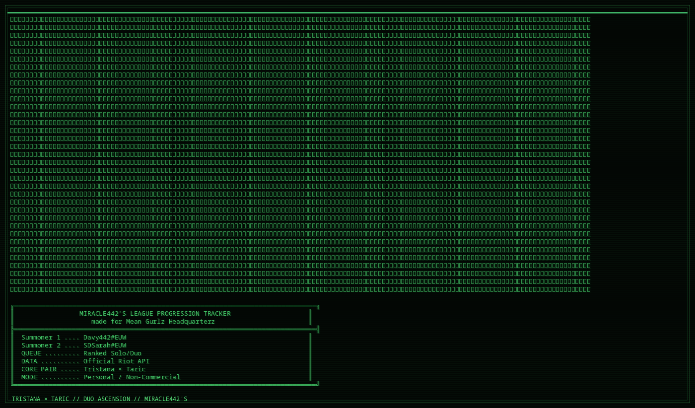

[ PREVIEW ]
This folder contains the GitHub-safe README and its visual assets.
GitHub does not allow a repository README to set the entire page background or load arbitrary CSS, so the styling is implemented through SVG/GIF artwork, tables, badges and native Markdown.